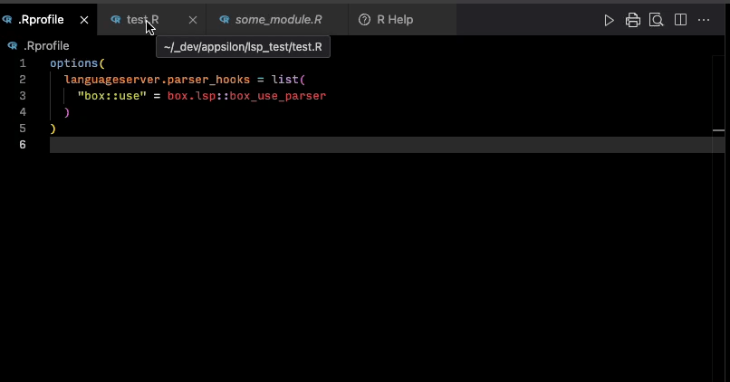

Experimental custom language server parser hook for box modules
This package is an attempt to provide box-compatibility for languageserver used in VS Code.
The code is based on initial work by Pavel Demin.
What Works
box::use() |
Code completion | Param completion | Tooltip help | As of version | Notes |
|---|---|---|---|---|---|
pkg[...] |
✓ | ✓ | ✓ | 0.1.0 | Full support |
pkg[attach_list] |
✓ | ✓ | ✓ | 0.1.0 | Link to documentation |
pkg |
|||||
prefix/mod[...] |
✓ | ✓ | ✓ | 0.1.0 | No documentation |
prefix/mod[attach_list] |
✓ | ✓ | ✓ | 0.1.0 | No documentation |
prefix/mod |
|||||
alias = pkg |
|||||
alias = prefix/mod |
|||||
pkg[alias = fun] |
✓ | ✓ | ✓ | 0.1.0 | No documentation |
prefix/mod[alias = fun] |
✓ | ✓ | ✓ | 0.1.0 | No documentation |

How to use
- Install
box.lspandlangaugeserver(languageserveris not going to be installed by default!).
NOTE: In Rhino, install
box.lspwithrhino::pkg_install("box.lsp")andlanguageserverwithrenv::install("languageserver").box.lspneeds to be added todependencies.Rand stored inrenv.lock, as it will be used in.Rprofile. On the other hand, installinglanguageservermakes sense only if one uses VSCode or Vim, and should be used on the level of the developer’s environment.
-
box.lsp::use_box_lsp()to configure your project’s.Rprofilefile. - Restart the R session to load
.Rprofile.
How to develop
- Ensure all
ImportsandSuggestspackages are installed. - Set
R_LANGSVR_LOG=./lsp.login.Renvironto start logging - Restart R session to load
.Rprofileand.Renviron. -
devtools::load_all()to load all development functions.
Development work on box_use_parser()
action <- list(
assign = function(symbol, value) {
cat(paste("ASSIGN: ", symbol, value, "\n"))
},
update = function(packages) {
cat(paste("Packages: ", packages, "\n"))
},
parse = function(expr) {
cat(paste("Parse: ", expr, "\n"))
}
)
content <- c("box::use(stringr, dplyr[alias = filter, mutate], xml2[...])", "filt", "stringr$str_c")
expr <- parse(text = content, keep.source = TRUE)
box_use_parser(expr[[1]], action)Dev work on completion
Lines and characters are index zero.
source("./tests/testthat/helper-utils.R")
client <- language_client()
temp_file <- withr::local_tempfile(fileext = ".R")
writeLines(
c(
"box::use(stringr[...])",
"str_c",
"str_m"
),
temp_file
)
client %>% did_save(temp_file)
client %>% respond_completion(
temp_file, c(1, 5))Development and Debugging using TCP LSP Client
Install tcplspclient
An interactive client for languageserver.
pak::pkg_install("milesmcbain/tcplspclient")
devtools::install_github("milesmcbain/tcplspclient")On Instance A
library(tcplspclient)
client <- TCPLanguageClient$new(host = "localhost", port = 8888)On Instance B with {languageserver} package repo open
Copy
source(".Rprofile") # custom parsers, custom lsp config
# Add `browser()` statements inside `{languageserver}` functions, or
# Add debug breakpoints in the RStudio editor.
devtools::load_all()
# Run `debugonce()`/`debug()` if needed.
run(port = 8888)On Instance A
# Check connection
client$handshake()
doc_path <- "tcp_test.R"
# With every change made to the test document:
client$send_notification(
method = "textDocument/didSave",
params = list(
textDocument = list(uri = languageserver:::path_to_uri(doc_path)),
text = paste0(stringi::stri_read_lines(doc_path), collapse = "\n")
)
)
# To trigger a completion request:
# line and character are index 0
client$send_message(
method = "textDocument/completion",
params = list(
textDocument = list(
uri = languageserver:::path_to_uri(doc_path)
),
position = list(line = 2, character = 5)
)
)The interactive debugger runs in Instance B.